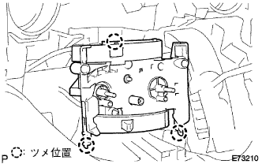
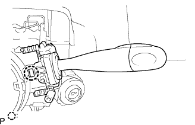

インストルメント パネルSUB-ASSY LWR 取り外し |
| 1. ボルト、スクリュー、ナット一覧 |

| 2. バッテリマイナスターミナル切り離し |
| 3. フロントドアスカッフ プレート RH取りはずし |
 |
手で上方に引いてツメのかん合をはずし、フロントドアスカツフプレートＲＨを取りはずす。
| 4. カウルサイドトリム ボード RH取りはずし |
 |
ツメのかん合をはずし、カウルサイドトリムボードを取りはずす。
| 5. フロントドア オープニングトリム ウェザストリップ RH取りはずし |
| 6. フロントピラー ガーニッシュ LWR RH取りはずし |
 |
車両後方端部から上方に引き、ツメのかん合5箇所をはずす。
車両後方に引き、フロントピラーガーニツシユLWR RHを取りはずす。
| 7. フロントピラー ガーニッシュ RH取りはずし |
 |
ガーニツシユ上部から手で車両内側方向に引いて、クリップのかん合を取りはずし、フロントピラーガーニッシュRHを取りはずす。
| 8. フロントドアスカッフ プレート LH取りはずし |
 |
手で上方に引いて車両後方からツメのかん合をはずし、フロントドアスカツフプレートLHを取りはずす。
| 9. リヤドア オープニングトリム ウェザストリップ LH取りはずし |
| 10. ピラーNO.1 ガーニッシュ LH取りはずし |
ツメのかん合をはずし、ピラーNo.1ガーニツシユLHを取りはずす。
| 11. フロントピラー ガーニッシュ LH取りはずし |
 |
ガーニッシュ上部から手で車両内側方向に引いて、クリップのかん合をはずし、フロントピラーガーニッシュLHを取りはずす。
| 12. フロントピラー ガーニッシュ LWR LH取りはずし |
 |
ツメ4箇所のかん合をはずし、フロントピラーガーニツシユ LWR LHを取りはずす。
| 13. インストルメントクラスタフィニッシュ パネル NO.1取りはずし |
 |
インストルメントクラスタフイニツシユパネルを車両後方に引き、ツメ8箇所のかん合をはずし、インストルメントクラスタフイニツシユパネルを取りはずす。
| 14. コンビネーションメータASSY取りはずし |
スクリユー2本を取りはずす。
コンビネーシヨンメータASSYを車両後方に引き、クリツプのかん合をはずす。
 |
コネクタを切り離し、コンビネーシヨンメータASSYを取りはずす。
| 15. グローブコンパートメント ドアSUB-ASSY取りはずし |
 |
スクリュー<J>2本をはずし、グラブコンパートメントドアを取りはずす。
| 16. インストルメントパネル レジスタASSY NO.1取りはずし |
 |
インストルメントパネル レジスタASSY No.1を車両後方に引き、ツメ5箇所のかん合をはずし、インストルメントパネルレジスタASSY No.1を取りはずす。
| 17. インストルメントクラスタフィニッシュ パネルSUB-ASSY CTR取りはずし |
シフトレバーを下げ、ステアリングをチルトダウンする。
 |
インストルメントクラスタフイニツシユパネル CTRを車両後方に引き、ツメ12箇所のかん合をはずし、インストルメントクラスタフイニツシユパネル CTRを取りはずす。
| 18. インストルメントパネルフィニッシュ プレート取りはずし |
 |
スクリュー<B>1本をはずし、インストルメントパネル フイニツシユプレートを車両後方に引き、ツメ4箇所のかん合をはずし、インストルメントパネル フイニツシユプレートを取りはずす。
| 19. センタクラスタモジュールコントロールASSY取りはずし（Ａ／Ｃオート） |
 |
インストルメントパネルLWRに保護テープをはり、クリップリムーバを使用して(すき間が狭いため)ツメ6箇所のかん合をはずし、センタクラスタモジユールコントロールASSYを切り離す。
各コネクタを切り離し、センタクラスタモジユールコントロールASSYを取りはずす。
| 20. コントロール ノブSUB-ASSY取りはずし（Ａ／Ｃマニュアル） |
 |
ヒータコントロールノッブ２個を取りはずす。
| 21. インストルメントクラスタフィニッシュ パネルSUB-ASSY LWR CTR取りはずし（Ａ／Ｃマニュアル） |
 |
インストルメンタルパネルLWRに保護テープを貼る。
スクリュ2本を取りはずす。
インストルメントクラスタフィニッシュパネルASSY LWR CTRをクリップリムーバーを使用して、ツメ6箇所のかん合をはずす。
各コネクターを切り離し、インストルメントクラスタフィニッシュパネルASSY LWR CTRを取りはずす。
| 22. エアコンディショナ コントロールASSY取りはずし（Ａ／Ｃマニュアル） |
|  |
ツメのかん合３箇所をはずし、エアコンディショナコントロールASSYを切り離す。
エアミックスダンパコントロールケーブル切り離し
 |
エアミックスダンパコントロールケーブルのクランプ部のツメを左右に広げ、アウタケーブルをケーブルクランプ部から引き抜きインナーケーブルを切り離す。
デフロスタダンパコントロールケーブル切り離し
 |
デフロスタダンパコントロールケーブルのクランプ部のツメを左右に広げ、アウタケーブルをケーブルクランプ部から引き抜きインナーケーブルを切り離す。
エアインレットダンパコントロールケーブル切り離し(除く寒冷地仕様車)
 |
エアインレツトダンパコントロールケーブルのクランプ部のツメを左右に広げ、アウタケーブルをケーブルクランプ部から引き抜きインナーケーブルを切り離す。
エアコンディシヨナコントロールASSYを取りはずす。
| 23. インストルメントパネルパッセンジャーエアバッグASSY用コネクター切り離し |
 |
インストルメントパネルパッセンジャーエアバッグＡＳＳＹ用コネクタを切り離す。
| 24. インストルメントパネル W/パッセンジャーエアバッグASSY取りはずし |
グラブボックス内のカバーを取りはずし、そこからパッセンジャーエアバッグ固定ボルト<A>を取りはずす。
スクリュー<C>もしくは<D>4本を取りはずす。

インストルメントパネル手前側を上方に引きあげ、ツメ7箇所のかん合をはずし、中央部のコネクタおよび、クランプを切り離す。
ステアリングホイールASSYを傷つけないように注意し、インストルメントパネルをパッセンジャーエアバッグ、ダクト類とともに一体で取りはずす。
スクリュ<B>2本をはずし、サイド デフロスタノズル ダクト No.2をインストルメントパネル W/ パッセンジャーエアバッグASSYから取りはずす。
スクリュ<B>2本をはずし、ヒータ ツウ レジスタ ダクト No.3をインストルメントパネル W/ パッセンジャーエアバッグASSYから取りはずす。
スクリュ<B>2本をはずし、サイド デフロスタノズル ダクト No.1をインストルメントパネル W/ パッセンジャーエアバッグASSYから取りはずす。
スクリュ<B>2本をはずし、ヒータ ツウ レジスタ ダクト No.1をインストルメントパネル W/ パッセンジャーエアバッグASSYから取りはずす。
| 25. インストルメントパネル ボックスASSY取りはずし |
 |
ストッパおよび、ヒンジ部のかん合をはずし、インストルメントパネルボックスASSYを取りはずす。
| 26. インストルメントパネルフィニッシュ パネル LWR CTR取りはずし |
 |
クリップ<ｃ>2箇所、ツメ8箇所のかん合をはずし、インストルメントパネルフィニッシュパネル LWR CTRをとりはずす。
パワーアウトレツトソケットのコネクタを切り離し、インストルメントパネルフィニッシュパネル LWR CTRを取りはずす。
スクリュ３本をはずし、インストルメントカツプホルダを取りはずす。
| 27. インストルメントパネルフィニッシュ パネル LWR取りはずし |
 |
クリップ<a>2箇所、ツメ5箇所のかん合をはずす。
フードオープナーを切り離す。
各コネクタを切り離し、インストルメントパネル フイニツシユパネル LWRを取りはずす。
| 28. フロントタイヤ直進状態確認 |
| 29. ホーン ボタンASSY取りはずし |
トルクスソケツトレンチ(T30)を使用して、トルクスボルト2本を空転するまでゆるめる。
 |
マイナス薄刃ドライバーを使用して、トルクスボルト2本を引き出す。
 |
ホーンボタンASSYを手前に引き出す。
マイナス薄刃ドライバーを使用してロック解除し、エアバツグ用コネクタを切り離してホーンボタンASSYを取りはずす。
| 30. ステアリング ホイールASSY取りはずし |
 |
ナットをはずし、ステアリングホイールASSYおよびステアリングメインシヤフトASSYに合わせマークを付ける。
SSTを使用して、ステアリングホイールASSYをステアリングコラムASSYから取りはずす。
| 31. ステアリングコラムカバー取りはずし |
 |
スクリュー3本をはずし、ステアリングコラムカバーを取りはずす。
| 32. スパイラル ケーブルSUB-ASSY取りはずし |
スパイラルケーブルからエアバツグ用コネクタおよびコネクタを切り離す。
 |
ツメのかん合3箇所をはずし、ターンシグナルスイツチ部からスパイラルケーブルを取りはずす。
| 33. ヘッドランプ デイマ スイッチASSY取りはずし |
コネクタを切り離す。
|  |
図のツメを押し、かん合をはずしてヘツドランプデイマスイッチASSYを取りはずす。
| 34. ウインドシールド ワイパ スイッチASSY取りはずし |
 |
コネクタを切り離す。
図のツメ位置を押し、かん合をはずしてウインドシールドパイパスイツチASSYを取りはずす。
| 35. ステアリングコラムホールカバー プレート取りはずし |
 |
クリップ２個をはすし、ステアリングコラムホールカバープレートを取りはずす。
| 36. コラムシフト トランスミッション コントロールケーブルASSY切り離し |
シフトレバーをNレンジにする。
ナットをはずし、コントロールケーブルをベルクランクから切り離す。
 |
プライヤーを使用して、クリップの先端をはさみ込んでクリップをはずし、コントロールケーブルをコラムASSYから切り離す。
クリップをはずし、コントロールケーブルをコントロールケーブルブラケットから取りはずす。
マイナスドライバーを使用して、3箇所のツメをはずし、コントロールケーブルをエンジン側から引き抜く。
| 37. コラムシフト パーキング ロックケーブルASSY切り離し |
ケーブルのツメを縮め、パーキングロックケーブル(コラム側)を切り離す。
ボルトをはずし、パーキングロックケーブル(ペダル側)を切り離す。
| 38. ステアリング コラムASSY取りはずし |
ステアリングコラムASSYから各コネクタおよびワイヤハーネスのクランプを切り離す。
 |
ステアリングコラムASSY取り付けボルト3本を緩める。
ステアリングインターミデイエイトシヤフトNo.3とステアリングスライデイングヨークに合わせマークを付ける。
ボルトをはずし、ステアリングインターミデイエイトシヤフトNo.3とステアリングスライデイングヨークを切り離す。
コラムASSY取り付けボルト３本をはずす。
 |
ステアリングコラムクランプとインストルメントパネルリインホースメントASSYとのかん合をはずした状態で、ステアリングコラムASSYを手前に引き取りはずす。
| 39. ラジオチューナオープニングカバーW/ブラケット取りはずし |
| 40. ラジオレシーバASSY W/ブラケット取りはずし |
| 41. ナビゲーションレシーバASSY W/ブラケット取りはずし |
| 42. インストルメントパネルアンダ カバーSUB-ASSY NO.1取りはずし |
 |
クリップ<a>２個をはずし、インストルメントパネル アンダカバー No.1上部を手前に引いてツメ9箇所のかん合をはずし、インストルメントパネルアンダカバーNo.1を取りはずす。
| 43. カバー取りはずし |
ツメのかん合をはずし、カバーを取りはずす。
| 44. カウルサイドトリム ボード LH取りはずし |
 |
樹脂クリップをはずす。
ツメ２箇所、クリップ１箇所のかん合をはずし、カウル サイドトリムボード LHを取りはずす。
| 45. インストルメントパネル トゥー カウル ブレス CTR取りはずし |
ボルト<E>1本、ナット<K>1個を取りはずし、インストルメントパネル ツウ カウル ブレス CTRを取りはずす。
| 46. インストルメントパネルロワー W/リインフォースメント取りはずし |
パーキングブレーキペダルおよび、ブレーキペダル上部のボルトをはずす。
ボルト<A>8本<E>2本、クリップ<b>１個、ナット<K>2個を取りはずす。
各クランプおよび、コネクタを切り離し、ワイヤハーネスのひっかかりがないことを確認して、インストルメントパネルロワー Ｗ／リインフォースメントをインストルメントパネルレジスタコネクタ RHとともに取りはずす。
スクリュ<<F or G or H>>1本、クリップ<<b>>2個をはずし、インストルメントパネル リインホースメントからインストルメントパネル LWRを取りはずす。
スクリュ<B>3本をはずし、インストルメントパネル レジスタ コネクタ RHをインストルメントパネル LWRから取りはずす。
ボルトをはすし、ドアコントロールコンピュータウィズレシーバおよび、スマートキーコンピュータ(スマート装着車)を取りはずす。